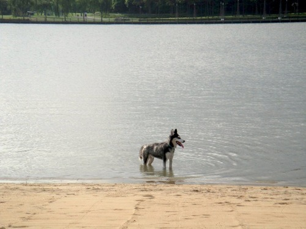

Fri, 13 Aug 2010 13:28:00 · Sky · Husky
Is Husky a good swimmer?
Apparently so. We went to 佘山公园 somewhere in Shanghai, and it was the first time Sky ever see the water… looks like he’s a pretty good swimmer (according to some witnesses). Who would’ve thought that a dog who hates walking under the rain would swim like there’s no tomorrow!
No photo of him swimming, unfortunately… but I can prove it! :-)
